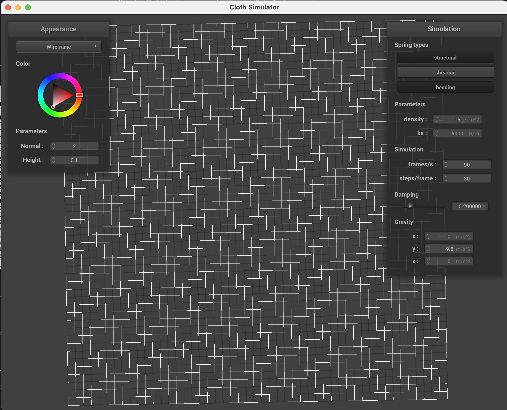
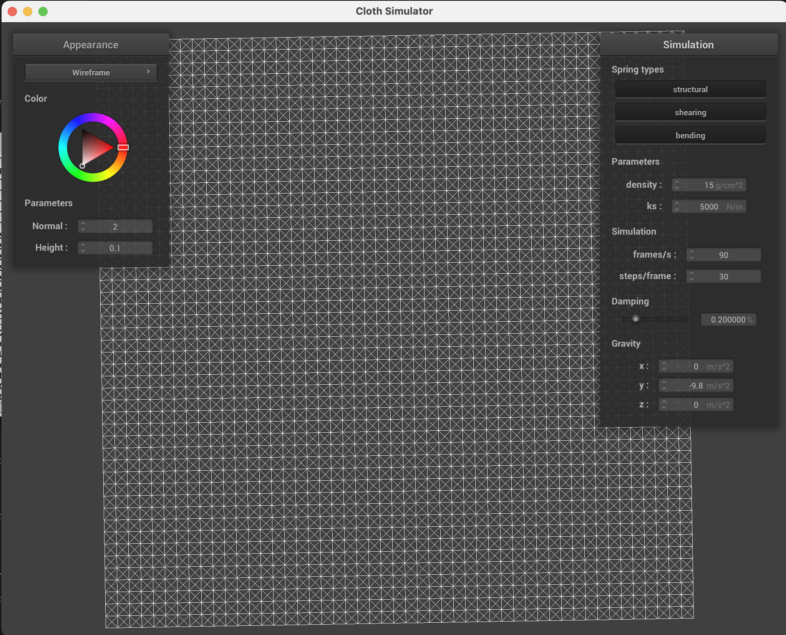

CS184/284A Spring 2025 Homework 4 Write-Up
Link to GitHub repository: https://github.com/cal-cs184-student/sp25-hw4-arhaan-ian.git
Link to Webpage :https://iansw246.github.io/cs184-284a-sp25-hw-webpages/hw4/index.html
Overview
In this homework, we implemented a physically-based cloth simulation system from the ground up. We started by building a mass-spring model, creating a 2D grid of point masses connected by structural, shearing, and bending springs. We then simulated the cloth's motion using Verlet integration and enforced spring length constraints to prevent unrealistic stretching.
Next, we implemented collision handling with both external objects, like planes and spheres, and the cloth itself (self-collisions). We also applied a range of shading techniques — including diffuse and Blinn-Phong shading — and experimented with bump mapping, displacement mapping, and environment mapping to add visual richness to the simulated cloth.
Through this assignment, we developed a deeper understanding of how physics-based simulation interacts with numerical stability and visual rendering. It was fascinating to see how small changes in simulation parameters like spring constant, density, and damping could dramatically alter the cloth's behavior. Overall, this project gave us valuable insight into the intersection of simulation and graphics.
Part 1: Masses and springs
In this part of the assignment, we implemented the buildGrid() function, which constructs a cloth as a 2D grid of point masses connected by springs. Each point mass is positioned according to the cloth's width and height and is optionally pinned based on the input JSON. The springs enforce physical constraints between the point masses. I implemented three types of springs:
- Structural: Connects each point mass to its immediate horizontal and vertical neighbors.
- Shearing: Connects each point mass diagonally to its adjacent neighbors, forming a crisscross pattern.
- Bending: Connects each point mass to its second-nearest neighbors in both the horizontal and vertical directions.
Below are screenshots from scene/pinned2.json showing the cloth wireframe with different combinations of spring constraints. I chose a camera angle where the mesh is clearly visible.
|

|
|
|

|
|
When only shearing springs are disabled, the wireframe resembles a simple grid or "guy" silhouette. When shearing springs are enabled, a diagonal pattern appears, stabilizing the mesh against deformation. Enabling all constraints results in a denser, more realistic cloth structure, improving stability and reducing sag.
Part 2: Simulation via numerical integration
In this part, I implemented Verlet integration to simulate cloth motion by computing forces acting on point masses and updating their positions over time. I then experimented with various simulation parameters to observe how they affect cloth behavior from start to rest.
Spring Constant \( k_s \)
The spring constant determines the stiffness of the springs between point masses. With a very low \( k_s \) (e.g., 500), the cloth becomes soft and loose. It stretches significantly and sags under gravity, often lacking enough force to return to shape. With a high \( k_s \) (e.g., 20000), the cloth becomes very stiff. It barely stretches and maintains a tight shape, but also exhibits visible jittering or oscillations as it over-corrects during collisions and spring constraint enforcement.
Density
Increasing the cloths density makes it heavier. With high density (e.g., 500), the cloth falls faster and compresses more under gravity. If the springs arent strong enough, this can lead to noticeable sagging. With low density (e.g., 5), the cloth is much lighter and appears to float or oscillate more in response to spring forces.
Damping
Damping controls how much motion is resisted over time. With low damping (e.g., 0.01), the cloth bounces or oscillates for a long time before settling. With high damping (e.g., 0.9), the cloth quickly stabilizes but may look unnaturally stiff. A medium value (e.g., 0.2) provides a natural decay of motion.
Final Resting State
Here is a screenshot of the cloth in its final resting state using the default parameters from pinned4.json:

These experiments gave us a better understanding of how physical parameters interact to produce different cloth behaviors. Adjusting density, stiffness, and damping lets us simulate different types of materials from light silk to heavy canvas and observe their dynamic responses to forces and constraints.
Part 3: Handling collisions with other objects
Implementation
The cloth can intersect with spheres and planes.Spheres
For sphere intersection, each the distance from each point mass to each sphere's center is checked. If the distance less than the sphere's radius, the point mass has collided with the sphere. In this case, we calculate the tangent point on the sphere's surface that is closest to the point mass's current position. Finally, we adjust the point mass's position from the previous position toward the tangent point, scaled by friction.
Planes
Plane intersection is checked by checking for line-plane intersection along the line segment from the old to the new position. This is accomplished by solving the following equation for \(d \): \[ (p - p_0) \cdot n = p_0 + (p_1 - p_0) d \] where \( p \) is a point in the plane, \( n \) is the plane's normal vector, and \( p_0, p_1 \) is the point mass's old and new position, respectively.
If \( 0 \lt d \lt 1 \), then a collision has occurred. The point on the plane that the point mass would have collided with if it did not go through the plane is called the tangent point and is equal to \(p_0 + d (p_1 - p_0) \). To offset slightly above the plane, \( d - \delta \) is used instead of \( d \) for the above equation where \( \delta \) is a small constant. The vector from the old position to the new point above the plane is called the correction vector.
Finally, the point mass's position is adjusted by correction vector scaled by \( 1 - f \) where \( f \) is the friction.
Cloth on Sphere
A cloth in its final resting state on a sphere, with it different spring tension values (ks), in N/m.Part 4: Handling self-collisions
Implementation
To handle self-collisions efficiently, each point mass of the cloth is assigned to a box based on its position. When checking collisions, only points in the same and adjacent boxes must be checked.
The 3D space is partitioned into 3D boxes. For a cloth with dimensions \( w \times h \) and \( n_w \times n_h \) points spanning the width and height, the box dimensions are \( \frac{3w}{n_w} \times \frac{3h}{n_h} \times \max(\frac{3w}{n_w}, \frac{3h}{n_h}) \). To get the integer coordinate of the box given a point, each coordinate of the point's position is floor divided by the size of a box in the corresponding coordinate.
In each simulation step, the hash table is first built. Then for each point, the distance from all other points in the same box are checked. If the distance is less than \(2 \ast thickness \), they are considered to have collided. The vector needed to move the initial point to a distance \(2 \ast thickness \) from the other, called the correction vector, is calculated. The average of all correction vectors over all colliding points, scaled down by the number of simulation steps, is the final adjustment to the point's position.
The following screenshots show the progression of a
cloth folding on itself.


As the spring tension in the cloth increases, the spring remains
more upright and folds less while falling down and self-colliding.
When the cloth completely falls to the ground, cloths with higher
spring tension have fewer folds and are smoother.
Increasing density has the opposite effect of spring tension:
low density cloths have similar behavior to high spring constant
cloths, with smoother surfaces and less folding.
Part 5: Shaders
Shader programs
A shader is an isolated GPU program used to perform rendering on the GPU in parallel. Two main types of shader programs are:
- vertex shaders: generally operate on each vertex to transform properties such as position.
- fragment shaders: processes each fragment to calculate the fragment's color from operations such as shading. Fragments are used to create the final colors of output pixels.
Blinn-Phong
The Blinn-Phong shading model simulates lighting by considering three components that make up the reflected light from a point on a surface of a material: ambient, diffuse, and specular. The equation for the resulting lighting \( L \) from Blinn-Phong lighting is \( L = L_a + L_d + L_s \), which each term representing the corresponding component as described previously.The ambient lighting component is simply a constant color added to the resulting lighting. This simulates light coming from all directions and fills in black shadows. The equation for ambient lighting \( \mathbf{L_a} \) is simple: For ambient lighting with intensity \( \mathbf{I_a} \) and an ambient constant \( k_a \), which controls the strength of ambient lighting relative to the other lighting terms, the equation is \[ \mathbf{L_a} = k_a \mathbf{I_a} \]
The diffuse component represents matte reflections, which are reflections that don't depend on the viewing angle, only the angle of incoming lighting relative to the surface's normal. This is shown in the formula for diffuse lighting: \[ \mathbf{L_d} = k_d \frac{I}{r^2} \max(0, \mathbf{n} \cdot \mathbf{l}) \] Where the lighting depends on the cosine angle between the surface's normal vector and the vector from the given point to the light \( \mathbf{n} \cdot \mathbf{l} \).
The last component is the specular component. This represents direct, mirror-like reflections. The equation for the specular component is \[ \mathbf{L_s} = k_s \frac{\mathbf{I}{r^2}} \max(0, \mathbf{n} \cdot \mathbf{h})^p \]
Texture mapping
Bump mapping and displacement mapping
Both approaches create similar texture effects with the illusion of depth in the sphere's texture. However, displacement mapping also changes the position of the vertices, as is visible in the edges of the sphere.
Coarseness comparison
Coarseness has little effect on bump mapping, but on displacement mapping, the vertices are adjusted at higher frequencies and the sphere has a rougher edge with increasing coarseness levels.